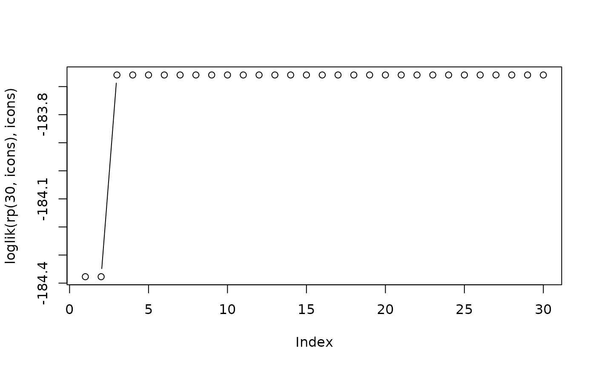

hyper2 objectrp.RdUses Metropolis-Hastings to return random samples from the prior of a
hyper2 object
rp(n, H, startp = NULL, fcm = NULL, fcv = NULL, SMALL = 1e-06, l=loglik, fillup=TRUE, ...)Object of class hyper2
Number of samples
Starting value for the Markov chain, with default
NULL being interpreted as starting from the evaluate
Constraints as for maxp()
Notional small value for numerical stability
Log-likelihood function with default loglik()
Boolean, with default TRUE meaning to return a
matrix with the fillup value added, and column names matching the
pnames() of argument H
Further arguments, currently ignored
Uses the implementation of Metropolis-Hastings from the MCE
package to sample from the posterior PDF of a hyper2 object.
If the distribution is Dirichlet, use rdirichlet() to generate
random observations: it is much faster, and produces serially
independent samples. To return uniform samples, use
rp_unif() (documented at dirichlet.Rd).
Returns a matrix, each row being a unit-sum observation.
Function rp() a random sample from a given normalized
likelihood function. To return a random likelihood function, use
rhyper2().
File inst/ternaryplot_hyper2.Rmd shows how to use
Ternary::ternaryPlot() with rp().
rp(10,icons)
#> NB L PB THC OA WAIS
#> [1,] 0.1666667 0.1666667 0.1666667 0.1666667 0.1666667 0.1666667
#> [2,] 0.1666667 0.1666667 0.1666667 0.1666667 0.1666667 0.1666667
#> [3,] 0.1666667 0.1666667 0.1666667 0.1666667 0.1666667 0.1666667
#> [4,] 0.1666667 0.1666667 0.1666667 0.1666667 0.1666667 0.1666667
#> [5,] 0.1666667 0.1666667 0.1666667 0.1666667 0.1666667 0.1666667
#> [6,] 0.1666667 0.1666667 0.1666667 0.1666667 0.1666667 0.1666667
#> [7,] 0.1666667 0.1666667 0.1666667 0.1666667 0.1666667 0.1666667
#> [8,] 0.1666667 0.1666667 0.1666667 0.1666667 0.1666667 0.1666667
#> [9,] 0.1666667 0.1666667 0.1666667 0.1666667 0.1666667 0.1666667
#> [10,] 0.1666667 0.1666667 0.1666667 0.1666667 0.1666667 0.1666667
plot(loglik(rp(30,icons),icons),type='b')
